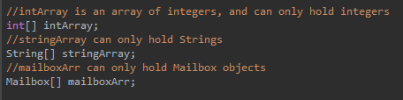
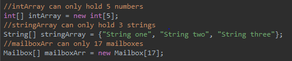
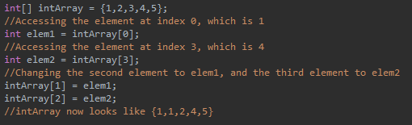
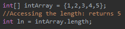
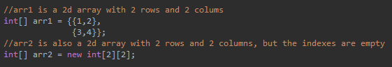
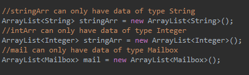
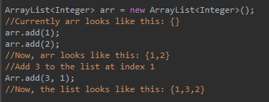
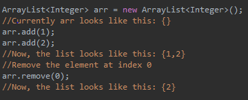
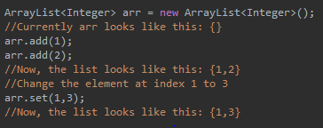
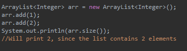

Arrays
In Java, arrays are easy ways to store large amounts of data in an organized way. They contain a certain number of identifiers, that each point to data. That data is accessible by telling the array to call that identifier.
You can visualize arrays like mailboxes on a road. Each house has a mailbox that is associated with that house, and each mailbox contains a certain amount of letters inside.
In Java, Arrays can only have one type of data. This type is defined when the array is initialized. For example, an array of numbers can only hold numbers, and an array of Strings can only hold strings.

Examples of the declaration and initialization types of arrays
Arrays also have only a set amount of data. When they are declared, they hold a certain amount of data, and no more data can be added.

Examples of arrays of different lengths
To access the element at a certain point in the array, you call the index at which it rests. The indexes of an array start at 0 with the first element, and end at the length - 1 on the last element. To change the element at the index of the array, you also use the index.

Examples of accessing and changing elements at certain indexes in an array
To find the set storage limit of an array, you use the length variable inherent to the array class. Length is a public variable of type int, so you call from the object.

Example of finding the array length
2D Arrays
2D arrays are a special type of arrays. They are arrays of arrays. They still can only hold one type of data, and cannot add more data than it is told at first. They are defined by having two square brackets before the name of the variable. When they are initialized, the number of rows is given in the first square brackets, and the number of columns in the second.

Examples of 2D arrays
To call a specific element from a 2d array, you use the same method as from a 1d array, except you use 2 square brackets, and put the row number in the first brackets and column in the second brackets.
ArrayLists
ArrayLists are also easy ways to store large amounts of data in an organized way.
Like arrays, they are constrained to only one type of data. This type of data is defined when the variable is declared. The type of data is contained in the <> brackets.

EExamples of the initialization of different ArrayLists
Second of all, they are not constrained to a set storage limit. They can contain as much or as little data as is necessary.
New data is added with the add method. If only the element to be added is passed, it is added to the end of the array list. If the element to be added and the index at which it is to be inserted are passed, the element is added at that index, and every element in the ArrayList that is at that index or greater is moved one to the right.

Examples of adding elements to an ArrayList
Data is removed with the remove method. The remove method removes the element present at the index it is passed, and moves every element with a greater index one to the left.

Example of removing an element from an ArrayList
Data is changed with the set method. The set method changes the element at the index passed to it to the element that is passed to it.

Example of changing an element in an ArrayList
To find the current amount of elements in an ArrayList, the size() method, which returns the Array’s size, is used.

Example of getting the size of an ArrayList
ArrayLists must also be imported using java.util.* at the beginning of the program.
Search and Sort
Searching and sorting algorithms are used in Java to find and organize data efficiently. They typically sort arrays or ArrayLists.
Searching Algorithms: Binary Search
The most common form of searching algorithm is called Binary Search. It is a method of searching for a specific element in a sorted array by repeatedly dividing the search range in half.
The array must already be sorted for binary search to work.
How it works:
- Start with the whole array
- Divide it into halves
- Check the middle element
- If it&aposs the element you&aposre looking for, you&aposre done
- If it&aposs bigger than the element you&aposre looking for, move onto the lower half
- If it&aposs smaller, move onto the higher half
- Repeat steps 2-6 until you&aposve found the element, or until the search range is empty